Media
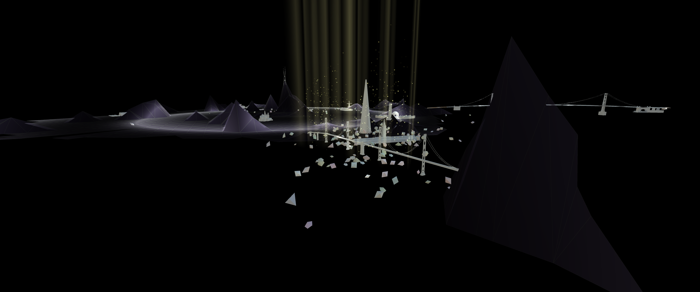 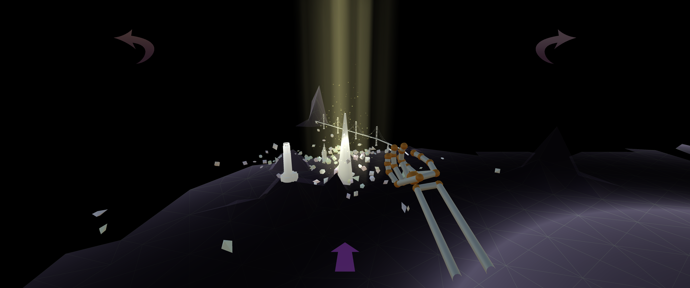 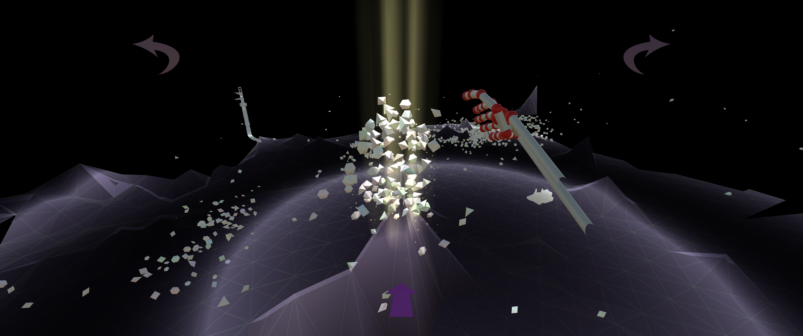 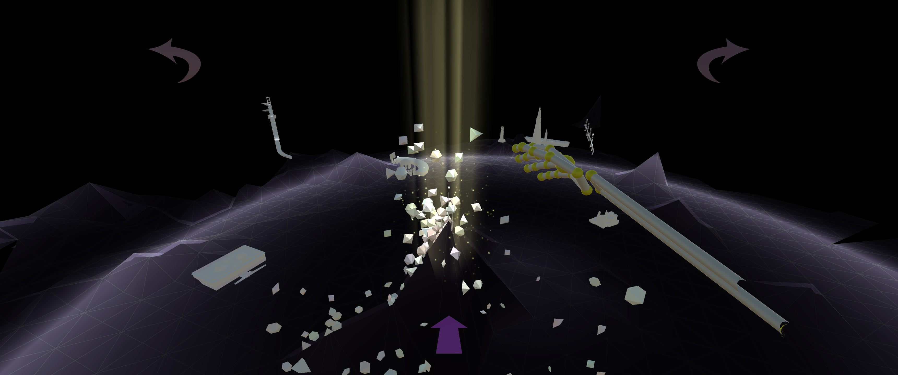
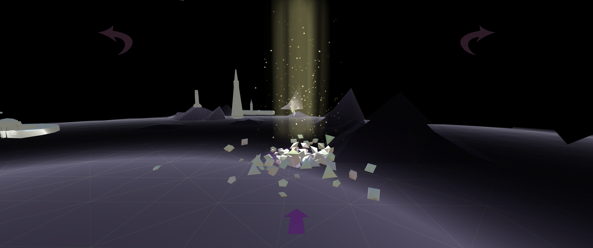
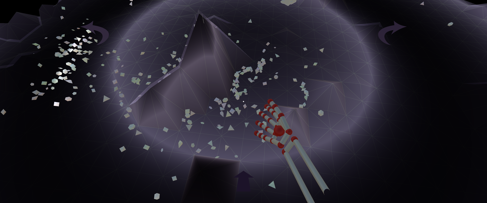
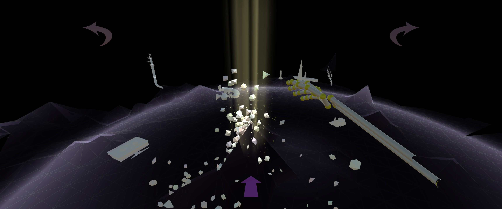
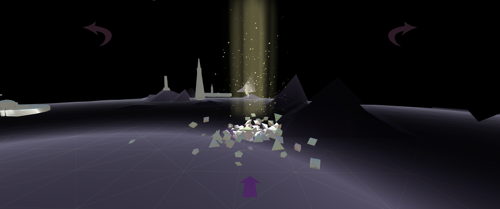
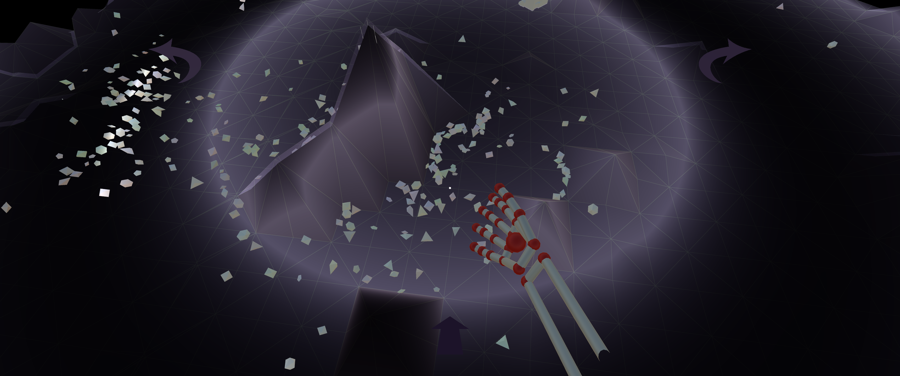
Images from Gray Area installation


Urban Intermezzo is an interactive audio installation about the change of the San Francisco soundscape. The audience becomes the conductor of the change landscape and shaping the largest human-made instruments that is the city. Emerging technologies become common link as the actual agent for the change the city goes through and the way the audience interacts with the virtual city.
The audience approaches a physical conductor's stand and see their hands appear in the virtual world. Through hand movements and symbolic orchestration. they control the destruction of the San Francisco's landmark. As the buildings are crumble, they trigger sound effects, creating an evolving lush soundscape. The journey gathers attention to the change -both good and bad- and the specificity of the the current ongoing changes in the city of San Francisco.
Urban Intermezzo is created for the Soundwave sound art biennial.
(August, 2016) Urban Intermezzo appeared at Gray Area Incubator as part of Soundwave
(July, 2016) Urban Intermezzo appeared at California Academy of Arts as part of Soundwave
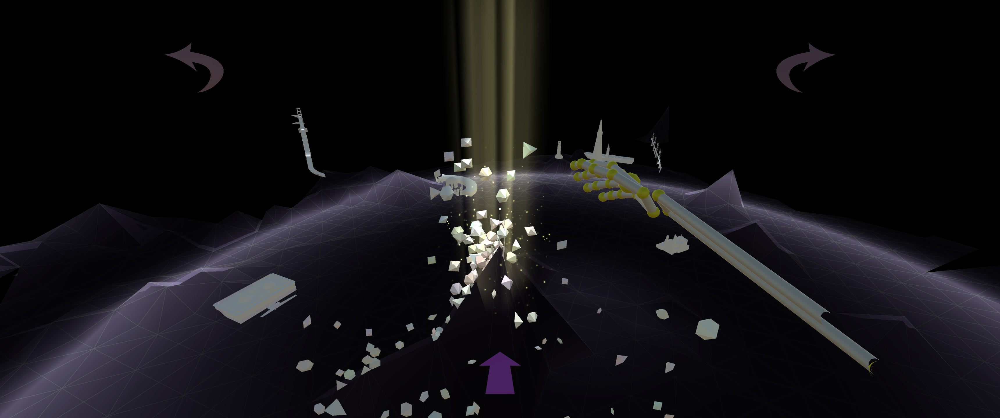
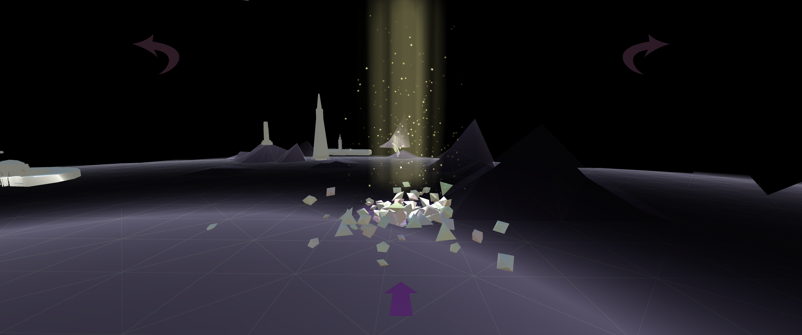
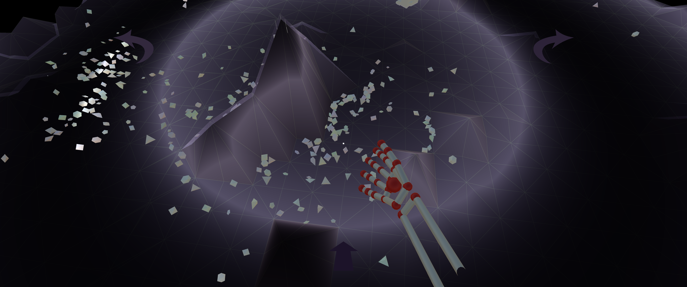